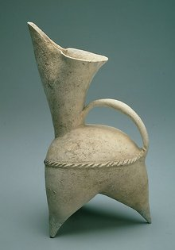
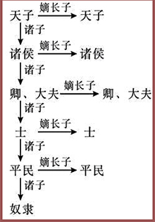
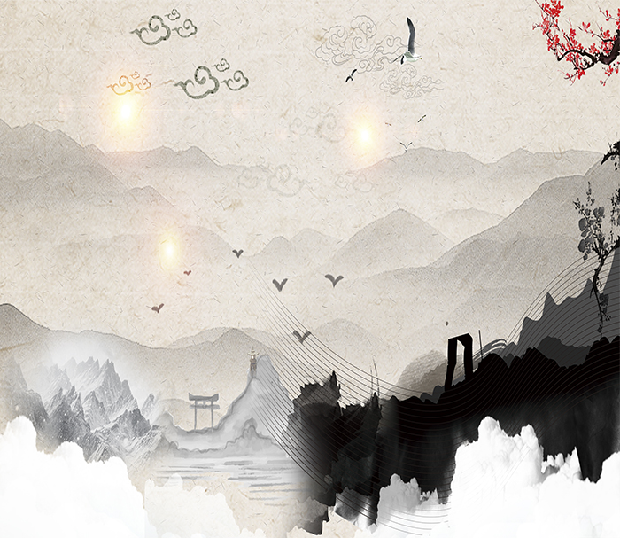
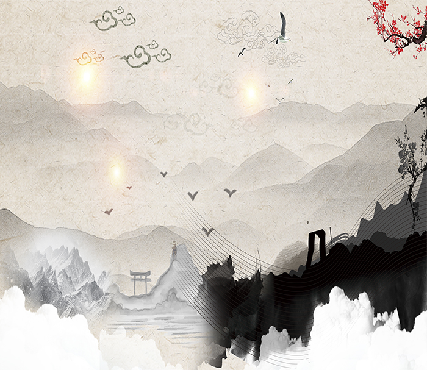
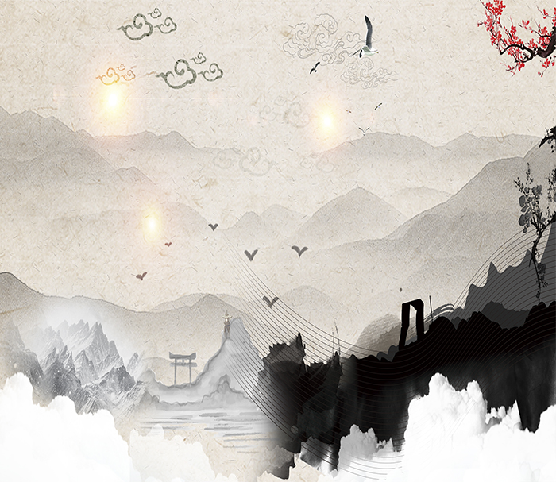

Taking farming economy as the basic form, it has strong dependence on natural environment.
Agricultural economy is a peaceful and self-sustaining economy, and the national psychology derived from it is also defensive.
As a typical river civilization, the Chinese nation has fewer acts of Frontier expansion and aggression.
A vast territory surrounded by natural barriers
Marine Civilization
Water is an important component of life activities. The shelter of sea water can effectively prevent the killing of life by ultraviolet radiation.
About 3.8 billion years ago, when the earth's land was barren, it began to breed in the roaring sea.
Life, the most primitive cell, is structurally similar to modern bacteria.
The terrain is a three-step terrace, spanning the thermal and thermal zones from north to south.
The southeastern part of China is close to the ocean with humid climate, more precipitation and less temperature difference, while the northwest part is far away from the ocean with dry climate, less precipitation and large temperature difference.
China's terrain is complex and diverse, with three-step mountains. Every 1000 meters of elevation in the terrain, the temperature should be reduced by 6 degrees.
Economic Soil
(1) Start manufacturing and using grinding stone tools.
(2) Pottery was invented.
(3) Primitive agriculture, animal husbandry and handicraft industry appeared.



Social isomorphism
Patriarchal clan system
The patriarchal patriarchal system in clan society evolved from the distribution of state power by kinship among royal nobles.
In order to establish a system of hereditary rule. It is characterized by the combination of clan organizations and state organizations.
Patriarchal hierarchy and political hierarchy are identical.
Home-country isomorphism
Families, families and the state have commonalities in organizational structure. They are all ruled by blood-patriarchal relationship.
There is a strict patriarchal system. "Home-country isomorphism" is the characteristic of patriarchal society.
Monarchy
The centralized political system centered on the ancient monarchs was born out of the patriarchal system in the late primitive society.


 
